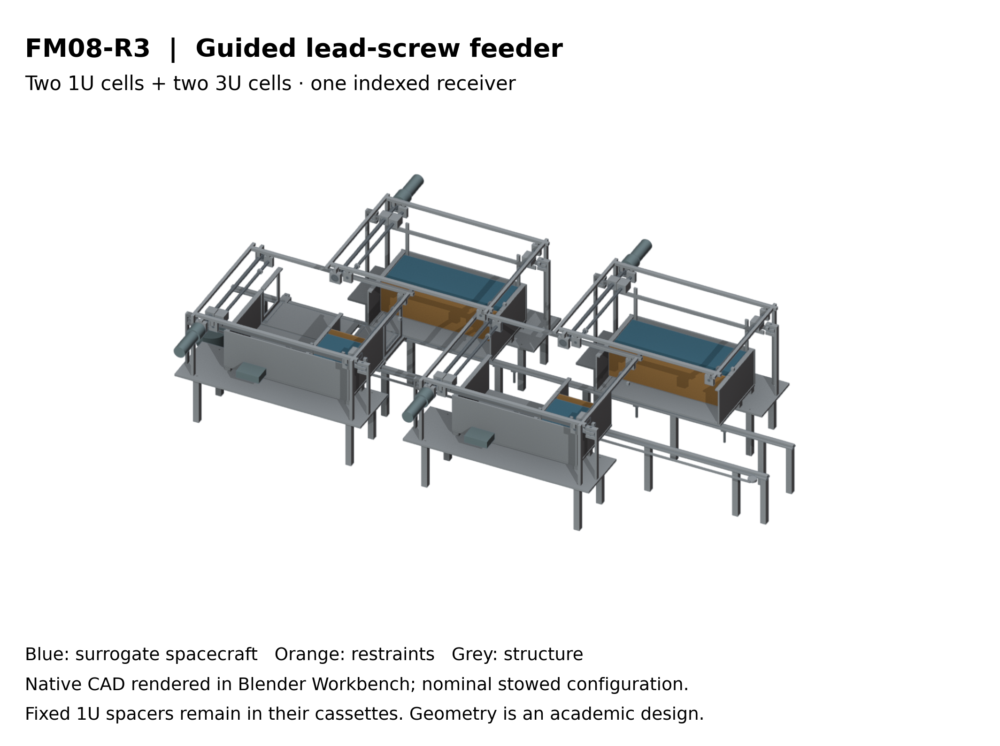
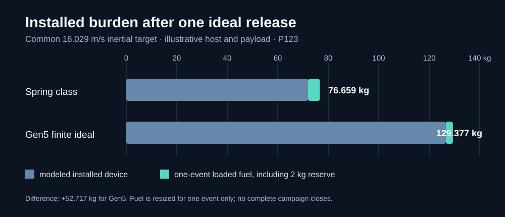
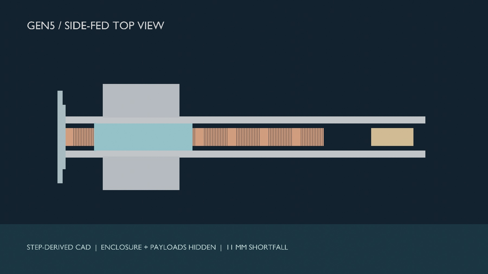
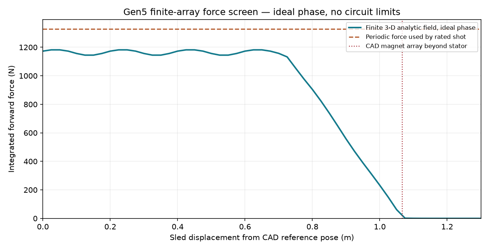
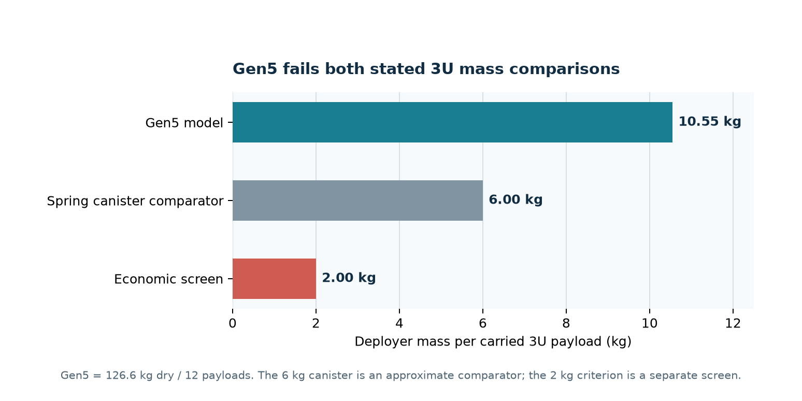
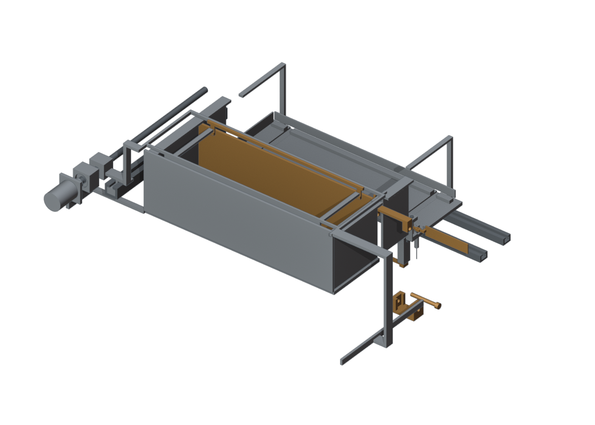
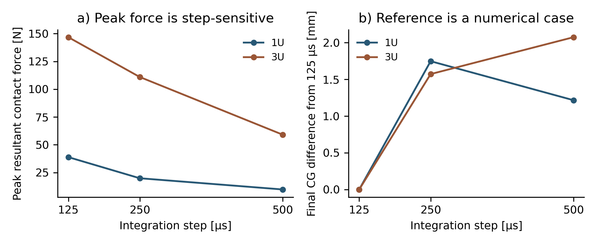

Guided transfer. Independent payload custody.
FM08-R3 uses a guided lead-screw pusher to transfer passive 1U and 3U spacecraft from individually restrained fixed cassettes into one indexed receiver. Fixed 1U spacers remain inside their cassettes. The selected academic architecture uses capped transfer channels, far-side receiver stops and a reversible pusher stroke.

30 s prescribed transfer; the satellite moves sideways across its 100 mm width.
One common receiver serves the four-cell mixed-size reference.
Two cells of each size, common leading datum and cassette-mounted spacers.
Nominal geometry, source-based sizing, load/tolerance screens and executable interlocks.
Selected mechanism and trade ↗ · Source, FreeCAD, STEP and reproduction ↗
Follow one 3U payload through the machine.
The animation illustrates the intended operating sequence using Gen5 STEP review solids. The enclosure and near cassette shell are hidden to expose the transfer path. Geometry, contact and resource assessments are available with their respective methods and evidence boundaries.
- StoreTwelve reference 3U payloads are arranged in two side cassettes.
- HandoffTransfer one payload from its cassette to the reusable carrier.
- AccelerateApply electromagnetic force through the modeled powered stroke.
- DepartSeparate the payload and arrest the carrier for recovery.
Download video, stage views and provenance ↗ · Static fit failure ↗
Gen5 evaluation.
The reference arrangement is a reproducible design study. It is not a qualified deployer or an accepted final configuration. These values separate predictions from exact-solid geometry checks.
Ideal phase, finite 3-D geometry; circuit losses omitted. The historical 16.029 m/s periodic-force result is challenged.
Ideal in-plane work on a 1 mm mesh. It corroborates finite-stator decline within the stated model limits.
Modeled dry mass per customer; 76% above an approximate 6 kg canister comparator.
The side cassettes exceed the stated inner width by 11 mm. An expanded all-leaf audit finds 17 intersecting pairs, including sled/track and sled/stator.
Installed mass and host propellant.
In a matched one-event reference, ideal finite-force Gen5 uses 1.866 kg less host fuel than a spring class when both carry 10 kg. Its modeled device is 54.562 kg heavier. If fuel is hypothetically resized for only that event and equal reserve, Gen5 still carries 52.717 kg more device plus fuel.
At the same ideal speed, that narrow parity screen requires about 52.630 kg less Gen5 device dry mass. It is a redesign target, not a selected solution, complete twelve-shot mission or validated motor rating.

Geometry, forces and system burden.
CAD renders and computational outputs are accompanied by source references.




Inspect the orbit calculations.
Executed GMAT and Orekit cases, visible numerical residuals, and the limits of the archived twelve-orbit campaign. The 19 October follow-up isolates the dominant gravity-axis mismatch; shared-pole continuous-arc agreement is approximately 1.285 mm, without a physical accuracy claim.

The evaluated configuration is traceable.
The 23-line mass ledger, all 22 Gen5/R1 intersections, uncertainty and fault boundaries, and corrected archived GMAT readback now have explicit dispositions. A separate numerical integration reproduces the historical lifetime ratio under a shared static atmosphere; actual lifetime and hardware performance remain unvalidated.
Gen6: mixed-size deployment and reusable handling.
The reference service carries two passive 1U and two passive 3U spacecraft on a generic maneuvering orbital-transfer host near 500 km sun-synchronous orbit. Releases occur within one orbital period; all terminal position and velocity targets share one epoch 24 hours after the final release. Host-assisted spring deployment uses the same comparison boundary.
FM07-R5 defines cassette transfer, captive receiver pins, exit-gate opening and empty-carrier reset for dedicated 1U and 3U handling coupons. Its nominal checks cover 46 cycle poses, 34 intermediate gate angles and 40 continuous linear sweeps. Twenty assembly STEP files and 74 individual parts pass independent exchange inspection.
These are nominal geometry results. Loaded fits, installed actuation and the seven-concept selection gates remain engineering requirements. FCE12 separately evaluates contact representation and final-state sensitivity on FM06 geometry. A 1 km/s-class release remains a long-range research objective.


Seven feeders, one declared transfer task.
Native FreeCAD/STEP geometry, load and tolerance cases, fault requirements and native CalculiX fixture results. Actual joint, handoff, arrest and installed-hardware gates remain open; no unverified baseline is selected.
Native lunar coast results
Eighteen GMAT lunar cases: native histories, sphere-stop outcomes and separate time-step/gravity-field sensitivities.
22 October numerical review
Complete-angle gate clearance and native contact-model diagnosis: source-linked plots, revised STEP geometry and retained numerical acceptance limits.
Transfer and servicing studies
CT-01 continuous nominal feed sequence and RPL-01 replenishment disposition: native geometry, stop/fit failures and explicit hardware boundaries.
Native campaign verification
Full event replay and precision budgets: 51 native cases, numerical agreement, control-error sensitivities and provisional measurement/host requirements.
21 October: geometry, stiffness and native contact review
The separate FM06-R1 research revision contains 30 native assembly/STEP poses, 70 independently checked reference part exchanges and 28 continuous prescribed rigid-translation checks. A backstop junction missed by solid-validity checks is corrected. These are nominal geometry results, not manufacturing or loaded-clearance acceptance.



Self-contained report, native inputs, CAD/STEP, checks and retained failures. At that historical study revision, all seven feeder architectures remained unselected. Evaluated Gen5 is unchanged.
Feeder actuation and captive handoff
FM-02 / IDR-01 / FSR-01 · 20 October: 28 native/STEP poses, continuous rigid-motion checks, source-backed ground-drive screens and explicit fit, thermal, braking and cycle-time failures. Actual actuation and installed integration remain open; that study did not select a feeder.

Feeder contact verification
The FCE12 numerical study checks collision geometry, unit scaling and final-state sensitivity. It includes twelve native cases, fourteen planar controls and 84 full-solid pose checks. Read the engineering results.